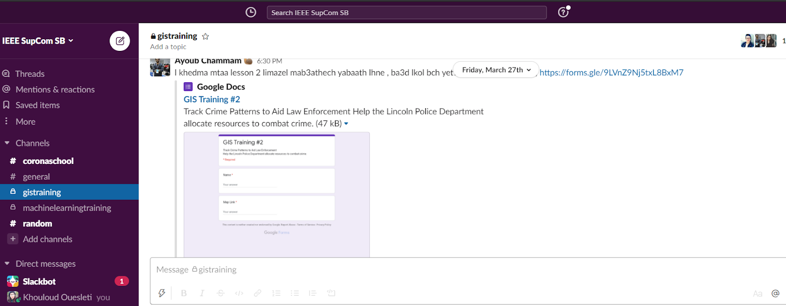

GIS TRAINING SESSIONS
-

GIS Session 1
INTRODUCTION TO GIS
In the first module of Fundamentals of GIS, We started this course with why GIS is awesome and what we can do with it. Then the course begins with giving us a full concept of what GIS is and shows us some examples. And then we went through some concepts, terminology, and the interface of the GIS and data types. By the end of this module, we have been able to communicate using GIS terminology, to navigate around the GIS, and to differentiate between raster and vector data. Then we continued on by learning about the history of GIS and how to differentiate between different GIS software packages, including ArcGIS and QGIS. And then we learnt how to get help effectively online and any other skills we may need to know in order to be a better GIS practitioner.
-
GIS Session 2
ARCGIS ONLINE BASICS
Learning the basics of GIS using the online tool of ESRI ArcGIS Online. ArcGIS Online is a cloud-based geographic information system used to map data, share content, and collaborate. This session will give a foundation for working with ArcGIS Online. Participants learn what ArcGIS Online is and the benefits that we can gain by using it.
-
GIS Session 3
ARCGIS ONLINE BASICS
In this lesson, participants created a map with a layer of hurricane evacuation routes in Houston, Texas. They added demographic data by census tract and used smart mapping to emphasize areas with limited vehicle ownership. The spatial patterns revealed in the map helped to determine where evacuation assistance is most needed in the event of a hurricane. Finally, the findings were shared by turning the map into an interactive web app.
-
GIS Session 4
CREATE A MAP TO TRACK CRIME PATTERNS
The purpose of this session is to help the Lincoln Police Department allocate resources to combat crime by developing a map that tracks crime patterns to aid Law Enforcement. During this session members learned how to create a map that can provide the Lincoln Police Department with valuable information about where crime occurs in relation to where police stations are located. First, they performed a proximity analysis to find crimes that happened more than five minutes away from a police station. Then, created a heat map of crime density to identify areas where more resources should be allocated. The information in the map can be used for other purposes, too. For instance, the Districts layer in conjunction with the crime heat map can be used to determine resource allocation for a specific district. Or, they could filter the Crime layer to only focus on crime of a specific type, such as assault or larceny. For the purposes of this project, however, the analysis is complete.
-

GIS Session 5
CREATE A 3D WEB SCENE
Using 3D technology to extend our 2D maps allows us to present information in a more realistic manner. In this lesson, participants will experience the power of 3D for themselves. Using Scene Viewer, in less than 30 minutes, we've taken 2D tree data with location and tree heights, added a few layer options, and created a compelling 3D visualization of the urban tree environment for Portland, Oregon. Viewers can use this scene to make informed decisions about urban tree management issues, such as where there are enough trees and, alternatively, where additional tree planting is needed. We did also create a quick web app using the WebApp Builder that contains the 3D scene and offers the tools that app users need to explore the scene.
-

GIS Session 6
CREATE A REAL-TIME DASHBOARD
During this session we practiced on how to create a real-time Dashboard with different types of Data visualization methods like maps, serial & pie charts, indicators, gauge,... Using Operations Dashboard for ArcGIS we create a dashboard that can be used to see the condition of the streets, status of the snow removal operations, and snow-related complaints that have been reported. We’ve used GeoEvent Server to bring the following data feeds into ArcGIS Online:
1: Locations of plow trucks
2:The status of the main streets based on recent passes from plows
3:Snow-related complaints that have been reported -
GIS Session 7
BUILD A STORY MAP
Sharing the Story of an Expedition by building a story map about a scientific expedition to a GUatemalan volcano. In this lesson, participants will use the new ArcGIS StoryMaps builder to tell the story of a National Geographic Expedition undertaken by three researchers. The combination of text, images, and maps creates a multimedia experience that is enthralling to read. They'll start by looking at a great example: a story map about an expedition in Guatemala. Then, they'll use that as a reference point to learn how to use ArcGIS StoryMaps.